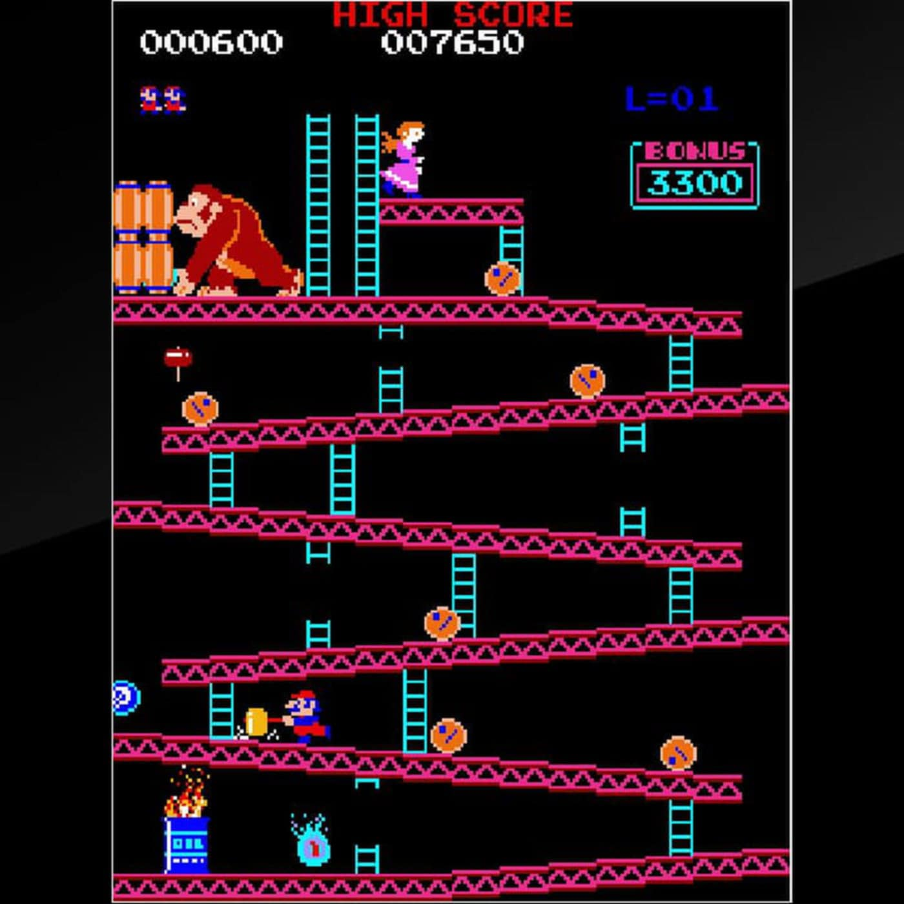
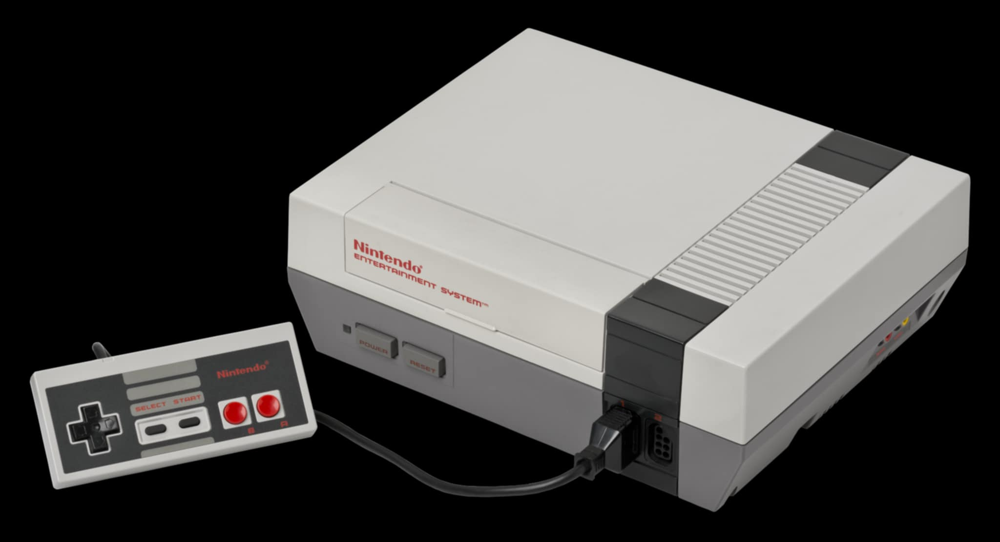
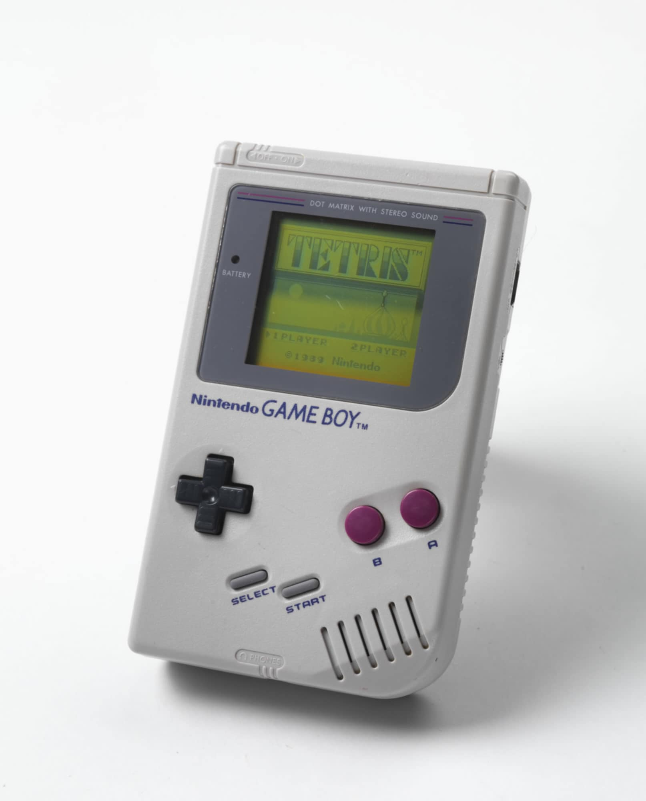
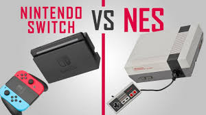

Nintendo
History
Founding and Early Years:
- Founded in 1889 by Fusajiro Yamauchi as a playing card company in Kyoto, Japan.
- Nintendo transitioned into electronic entertainment in the 1970s, creating arcade games like Donkey Kong in 1981.
Home Consoles:
- The launch of the Nintendo Entertainment System (NES) in 1985 revitalized the gaming industry after the crash, introducing iconic franchises like Super Mario Bros. and The Legend of Zelda.
- The Super Nintendo Entertainment System (SNES) followed in 1990, solidifying Nintendo's status in the market.
Innovation and Impact:
- Nintendo has consistently innovated, introducing handheld consoles like the Game Boy (1989) and the Wii (2006), which brought motion controls to the mainstream.
- The company is known for its beloved franchises and characters, including Mario, Link, and Pikachu.
New / Old Systems Comparison
| Feature | Nintendo Entertainment System (NES) | Nintendo Switch |
|---|---|---|
| Year of Release | 1983 (Japan), 1985 (North America) | 2017 |
| Generation | Third | Eighth |
| Technical Specs. |
|
|
| Description | 8-bit console popular in the 80s. | Hybrid console for both handheld and TV gaming. |
| Interesting Fact | Revived the video game industry after the crash of 1983. | Features online multiplayer and eShop for downloads. |
|  | ||